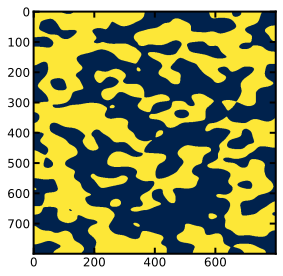
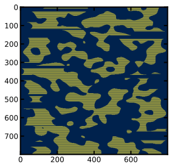
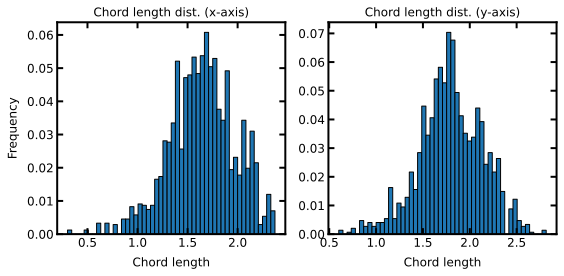

Chord length distributions¶
Import packages¶
[1]:
import porespy as ps
import matplotlib.pyplot as plt
ps.visualization.set_mpl_style()
Generate artificial image¶
[2]:
im = ps.generators.blobs(shape=[800, 800],blobiness=(1.5, 1), porosity=0.50)
fig, ax0 = plt.subplots()
im0 = ax0.imshow(im)
plt.show()

Apply chords using filter and analyze¶
[3]:
chords_x = ps.filters.apply_chords(im, axis=0, spacing=1, trim_edges=True)
chords_y = ps.filters.apply_chords(im, axis=1, spacing=1, trim_edges=True)
[4]:
fig, ax0 = plt.subplots()
im0 = ax0.imshow(chords_y)
plt.show()

Note in this image that chords connected to the edge have been removed. These chords are unnaturally shortened so could skew the distribution. These chords can be preserved by setting the trim_edges argument to False in the call to apply_chords. Also, the spacing between the yellow chords is adjustable. These chords must have a least 1 blank (purple) voxel between them, but this value can be increased using the spacing argument.
[5]:
cld_x = ps.metrics.chord_length_distribution(chords_x,bins=50,log=True)
cld_y = ps.metrics.chord_length_distribution(chords_y,bins=50,log=True)
[6]:
fig, ax = plt.subplots(ncols=2, nrows=1, figsize=(8, 4))
ax[0].bar(cld_x.bin_centers, cld_x.relfreq, width=cld_x.bin_widths, edgecolor='k')
ax[1].bar(cld_y.bin_centers, cld_y.relfreq, width=cld_y.bin_widths, edgecolor='k');
ax[0].set_xlabel("Chord length")
ax[0].set_ylabel("Frequency")
ax[1].set_xlabel("Chord length")
ax[0].set_title("Chord length dist. (x-axis)")
ax[1].set_title("Chord length dist. (y-axis)");

The results are noisy since the number of chords in a 2D image is not large enough to provide a good statistical distribution. A more traditional cumaltive density function on a normal scale is also available:
[7]:
cld_x = ps.metrics.chord_length_distribution(chords_x,bins=50)
cld_y = ps.metrics.chord_length_distribution(chords_y,bins=50)
[8]:
fig, ax0 = plt.subplots(figsize=(5, 4))
ax0.plot(cld_x.bin_centers, cld_x.cdf, label="CLD (x-axis)")
ax0.plot(cld_y.bin_centers, cld_y.cdf, label="CLD (y-axis)")
ax0.legend();
ax0.set_xlabel("Chord length")
ax0.set_ylabel("Frequency");